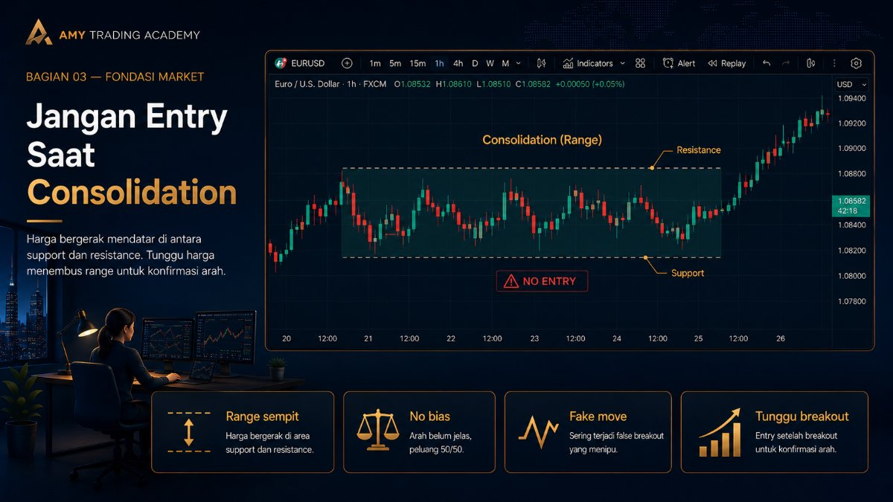
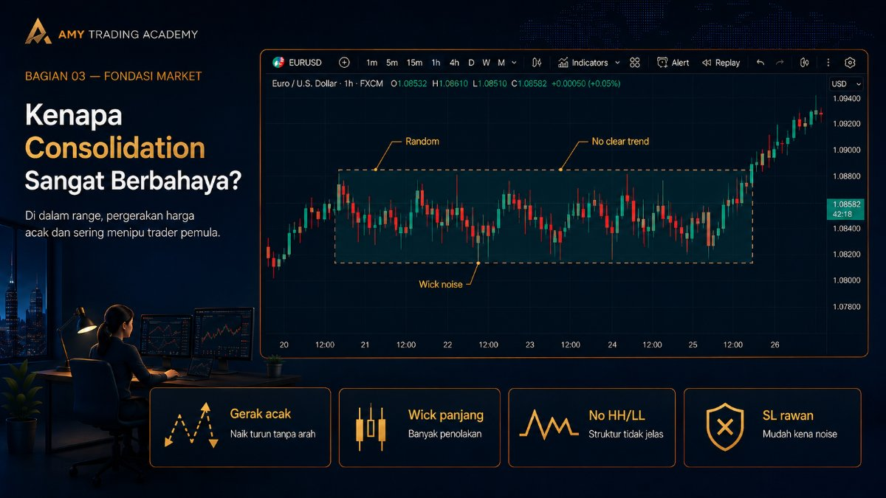
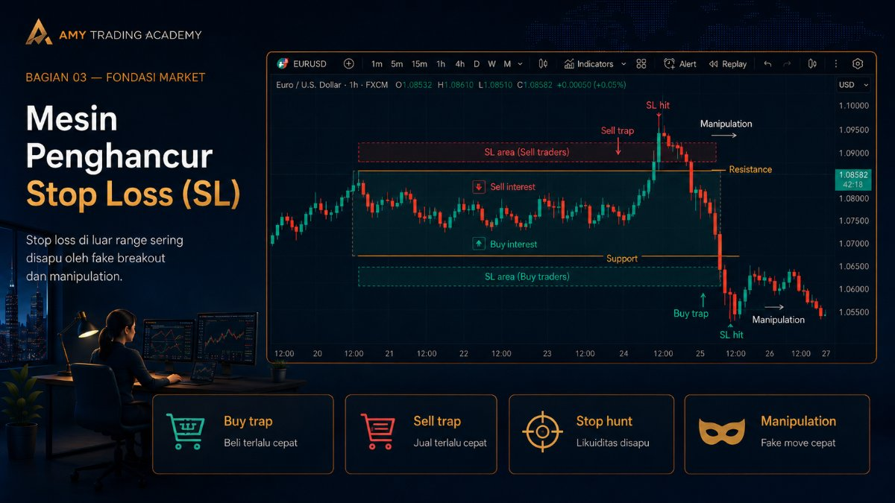
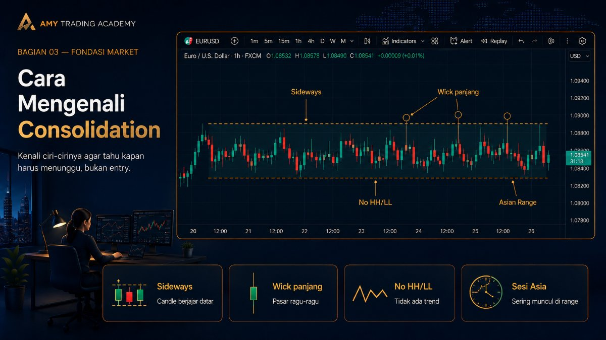
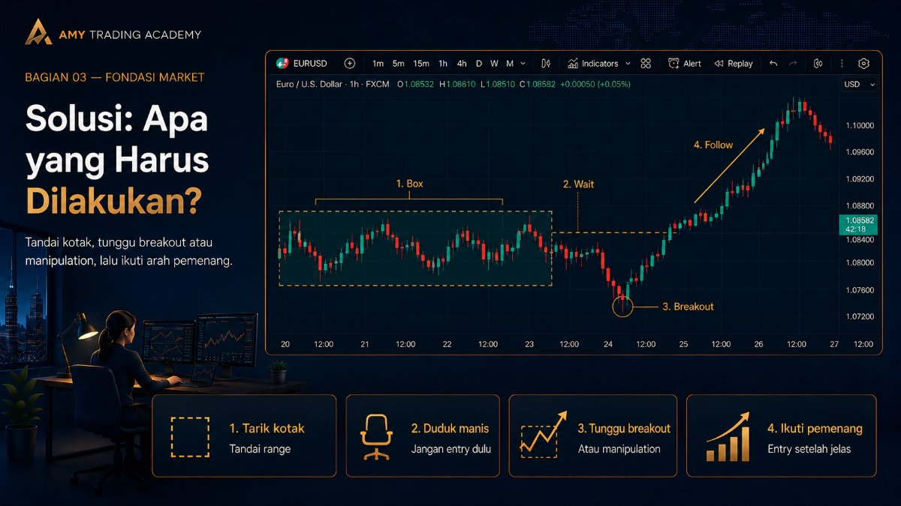

Jangan Entry Saat Consolidation

Salah satu penyakit paling mematikan bagi trader pemula adalah "tangan gatal". Baru buka chart, bawaannya pengen langsung klik Buy atau Sell. Padahal, saat itu harga sedang bergerak ke samping, mondar-mandir tidak jelas. Fase inilah yang disebut Consolidation (Konsolidasi).
Aturan emas dalam Smart Money Concepts (SMC) sangat sederhana: Jangan pernah entry di tengah area konsolidasi!
Kenapa Consolidation Sangat Berbahaya?

Mari kembali ke bab sebelumnya tentang siklus AMD. Consolidation adalah wujud dari fase Accumulation. Di fase ini, Smart Money (Big Players) sedang membangun posisi secara diam-diam. Mereka sengaja menahan harga di dalam sebuah "kotak" agar tidak meledak terlalu cepat.
Di dalam kotak ini, pergerakan harga sifatnya sangat acak (random). Harga bisa naik sedikit seolah mau breakout, lalu dibanting turun. Lalu turun seolah mau jebol support, tapi ditarik naik lagi.
Anggaplah area Consolidation itu seperti dua geng besar yang sedang bersiap-siap tawuran. Mereka saling lempar batu dari jarak jauh, tapi belum ada pihak yang maju menyerang.
Sebagai warga sipil (trader retail), ngapain kamu nekat jalan kaki di tengah lapangan tawuran itu? Kamu cuma akan kena lemparan batu (terkena Stop Loss) secara acak.
Mesin Penghancur Stop Loss (SL)

Banyak trader retail mencoba menerapkan strategi "Ping-Pong" di area ini. Mereka Buy di support terbawah kotak, dan Sell di resistance teratas kotak. Awalnya mungkin profit satu dua kali.
Tapi ingat, institusi butuh likuiditas. Mereka tahu persis di mana kamu menaruh Stop Loss (yaitu persis di luar garis kotak tersebut). Maka apa yang terjadi? Harga akan mendadak menusuk ke atas (memakan SL para Penjual), lalu dalam hitungan menit menusuk ke bawah (memakan SL para Pembeli). Ini adalah fase Manipulation yang akan menyapu bersih saldo akun yang mencoba bermain-main di dalam kotak.
Cara Mengenali Consolidation

Bagaimana cara tahu bahwa market sedang dalam fase konsolidasi dan kita harus menjauh? Perhatikan ciri-ciri ini di chart:
- Candle berjajar ke samping secara horizontal.
- Banyak sumbu (wick) panjang di atas dan di bawah candle yang menandakan keraguan pasar.
- Tidak ada tren Higher High (HH) atau Lower Low (LL) yang jelas.
- Sering terjadi di sesi yang lambat, seperti saat Sesi Asia (Asian Range).
Solusi: Apa yang Harus Dilakukan?

Daripada memaksakan diri masuk ke dalam kotak tawuran, lakukan strategi elegan ini:
- Tarik Garis Kotak: Tandai area tertinggi dan terendah dari zona konsolidasi tersebut.
- Duduk Manis (Sit on your hands): Ya, tidak melakukan apa-apa adalah sebuah keputusan trading yang sangat valid dan menguntungkan.
- Tunggu Breakout & Manipulasi: Tunggu sampai ada pihak yang menang. Tunggu harga keluar dari kotak (Expansion), atau tunggu harga melakukan fake breakout (Manipulation).
- Ikuti Jejak Pemenang: Setelah Smart Money menunjukkan tujuannya (Expansion sejati), barulah kamu mencari peluang entry saat harga melakukan koreksi (Retracement) ke arah tersebut.
Ingat pepatah dalam trading: "We are not predicting, we are reacting." Kita tidak bertugas menebak arah kotak konsolidasi. Kita hanya menunggu institusi membongkar kotak tersebut, barulah kita ikut numpang di belakang mobil mereka.